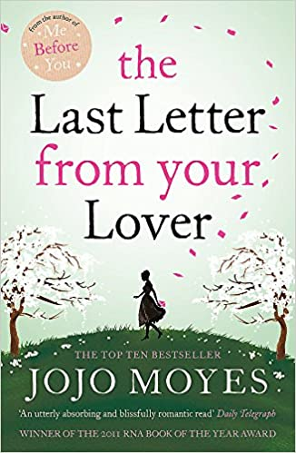

Books
The Best Books To Read in 2021
Open your eyes to the world, and the book is your way.
________________________________________________________________________________________________________________________________________________________________________________
review about " The Last Letter from Your Lover "

by Jojo Moyes
[Goodreads Author]
It is 1960. When Jennifer Stirling wakes up in the hospital, she
can remember nothing-not the tragic car accident that put her
there, not her husband, not even who she is. She feels like a
stranger in her own life until she stumbles upon an impassioned
letter, signed simply "B", asking her to leave her husband.
Years later, in 2003, a journalist named Ellie discovers the same
enigmatic letter in a forgotten file in her newspaper's archives.
She becomes obsessed by the story and hopeful that it can
resurrect her faltering career. Perhaps if these lovers had a
happy ending she will find one to her own complicated love life,
too. Ellie's search will rewrite history and help her see the truth
about her own modern romance.
5.0 Rating details
10,770 reviews
video about this book
________________________________________________________________________________________________________________________
Paperback,432 pages
Published June 26th 2012 by Penguin Books
(first published January 10th 2008)
Original TitleThe The Last Letter from Your Lover
Literary Awards Romantic Novel of the Year (RoNa's) Award (2011)
Characters Ellie Haworth, Jennifer Stirling, Anthony O'Hare
Setting London, England
community review
________________________________________________________________________________________________________________________
Start your review of The Last Letter from Your Lover
Michael Clifton rated it Nov 05, 2014
Ok, I have to admit, I liked this book. Definitely chick lit. At times it was very
reminiscent of Letters to Juliet and felt like I was reading that story. It did
have a love story within a love story. As well as a 40 year gap in one of them.
I might have shed a tear even. I've officially been baptized into Moyes'
works and now look feverishly to her other stories!
Alyssa rated it Jan 03, 2014
I do not generally read romances but Jojo Moyes manages to write her
romance with a bit more substance than most including a catchy story and
reasonably realistic characters. This book also has the advantage of being set
back a little in the past and the descriptions of relationships and attitudes of
the sixties were very true. It was certainly a page turner for me and I
especially liked the happy ending. No problem giving it four stars!
Saly rated it Jan 05, 2014
This wasn't my favorite JoJo Moyes book, because it was slow at times, but
once the two stories come together it's fantastic! Worth the time to read.
QUOTES FROM THE LAST LETTER FROM YOUR LOVE
_________________________________
““Know that you hold my heart, my hopes,
in your hands.” — 20 likes
“I was once told by someone wise that
writing is perilous as you cannot always
guarantee your words will be read in the
spirit in which they were written.” — 155 likes
book by Jojo Moyes
_____________________________